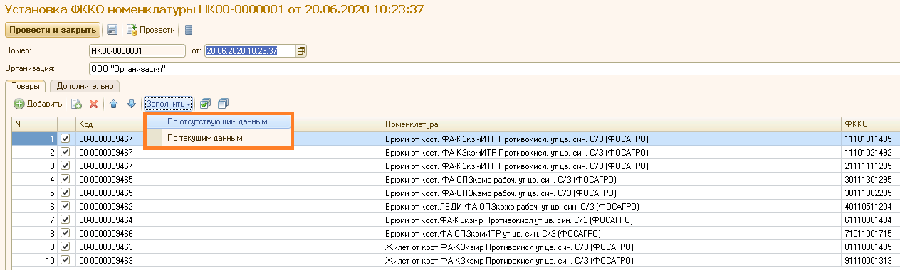
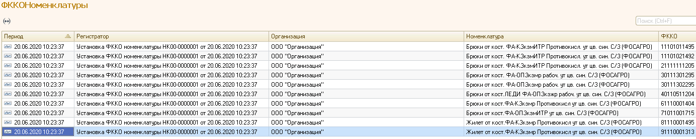
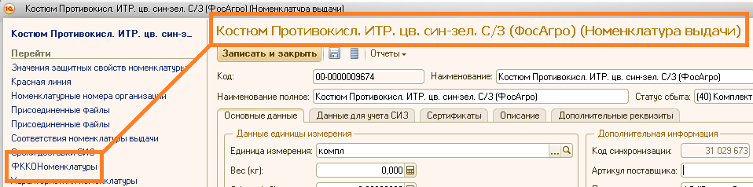
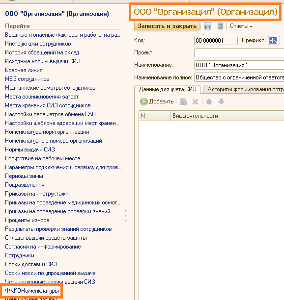
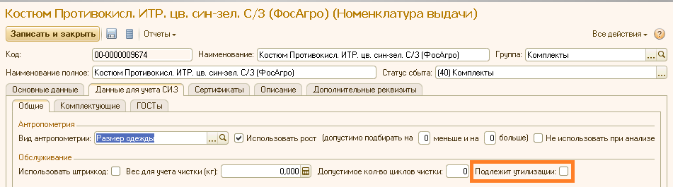

Документ может быть заполнен по уже существующим данным или по отсутствующим данным.

После проведения документа информация записывается в регистр сведений «ФККО номенклатуры».

Записи регистра можно открыть из карточки номенклатуры

или из карточки организации

Привязка к ФККО возможна для номенклатуры с установленным признаком «Подлежит утилизации».

Утилизация отражается документом «Передача СИЗ в утилизацию» в разделе «Обслуживание».